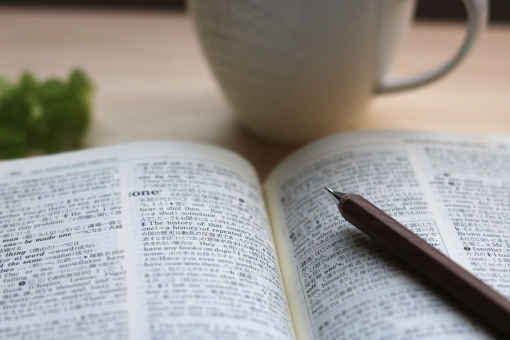

How to proceed with the study
Overnight soaking is a race against time.If you start studying at 6:00 p.m. and work until 7:00 p.m., you will only have about 10 hours if you take meals and breaks into account. The key is how to memorize the information accurately in a short time.
Human concentration does not last that long.However, by incorporating entertainment that you enjoy and focus on during your study breaks, you can continue to study without losing focus. In my case, I read manga and watch anime.
In taking this approach, it is necessary to be able to maintain a good balance between recreation and study. Also, in some subjects, such as mathematics and physics, which mainly involve calculations, it is effective to study while singing a song. You can concentrate infinitely on your studies while engaging in the recreational activity of singing.
For memorized subjects, memorize the part you want to memorize by repeatedly reading aloud the passage you want to memorize. By doing so, you can use your visual and auditory senses to remember.
For subjects that mainly involve calculations in science and mathematics, just keep on calculating. If you are not sure what it means or want more knowledge, search Google to understand it.When a Google search fails to help you understand, it is wise to give up and move on. We don't have time to stop for one thing.